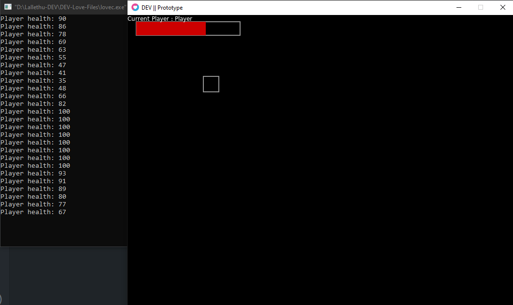

Job Pages
Bienvenue sur la page d'acceuil du site. Je vous souhaite une bonne lecture !
Ici la consigne était simple :
faire un "mini" site web de 4 pages sur un sujet
libre.
J'ai donc choisi le prototype d'un jeu codé avec le
framework Love2D et lua.

Fluidifier la navigation
Afin de proposer une navigation plus fluide, je vous propose de lire les détails concernant les différentes pages. Ou accedez directement au game pitch !
Vers Game PitchPage Pitch
La page Pitch expose certaines informations que l'on pourrait retrouver dans un Game Design Document (GDD), une sorte de cahier des charges.
Page Screenshot
La page Screenshot propose une galerie de photo prise en jeu durant la phase de prototype.
Page Code
La page Code Review propose également une galerie de photos, mais cette fois-ci c'est du source code concernant des élément clé du prototype.
Page d'accueil
Si vous lisez ceci c'est que vous y êtes !